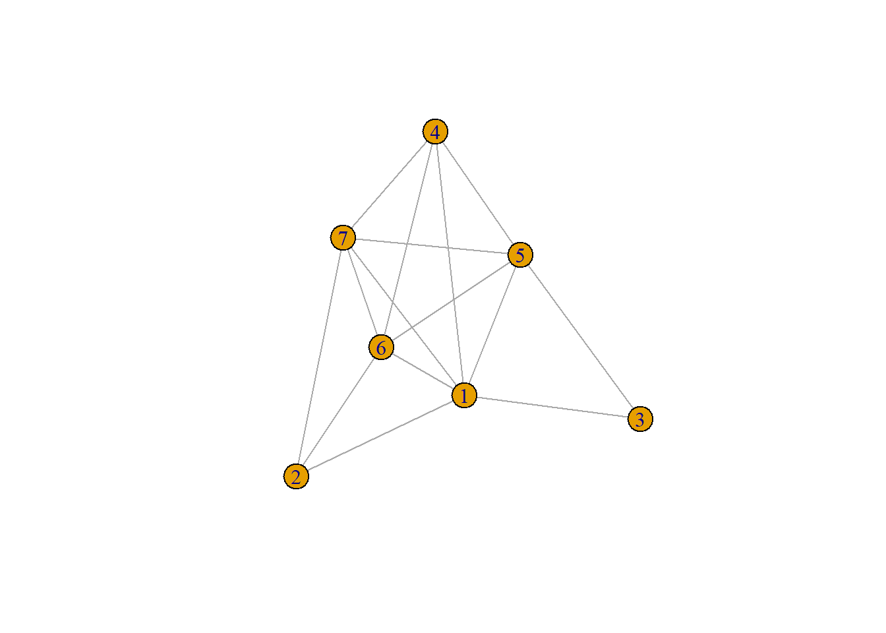

4 TEORÍA DE GRAFOS
- Rama de las matemáticas y las ciencias de la computación que estudia las propiedades de los grafos
- Un grafo \(\displaystyle G=(V,E)\) es una pareja ordenada en la que \(\mathbf{V}\) es un conjunto no vacío de vértices y \(\mathbf{E}\) es un conjunto de aristas.
- \(\mathbf{V}\) consta de pares no ordenados de vértices, tales como ${x,y} E $, entonces decimos que \(x\) e \(y\) son adyacentes.
4.1 Un poco de historia
Siglo XVIII: Problema de los puentes de Königsberg: Encontrar un camino que recorriera los siete puentes del río Pregel,de modo que se recorrieran todos los puentes pasando una sola vez por cada uno de ellos.
1736: El trabajo de Leonhard Euler sobre el problema titulado “La solución de un problema relativo a la geometría de la posición” es considerado el primer resultado de la teoría de grafos.(Euler, 1741)

Figure 4.1: Los siete puentes del río Pregel
4.2 Composición y conceptos
Grafo simple o grafo: Conjunto de nodos unidos por enlaces llamados aristas.
Grafo completo: Grafo simple donde cada par de vértices está conectado por una arista. Tiene \(n(n-1)/2\) aristas. Grafo regular de grado \(n-1\)
Camino: Secuencia de vértices dentro de un grafo tal que exista una arista entre cada vértice y el siguiente.
Figure 4.2: Grafo completo ponderado
4.3 Tipos de grafos
Subgrafo: Cuyo conjunto de vértices(como el de aristas) es un subconjunto del de grafo original.
Grafo de arcos ponderados o etiquetado: Grafo con asignaciones de pesos en cada arco.
Árbol: Donde cualesquiera dos vértices están conectados por exactamente un camino.

Figure 4.3: Árbol
4.4 Ejemplo básico en R
library(igraph)
g <- graph.formula(1-2, 1-3 ,1-4, 1-5 , 1-6 ,1-7, 2-6, 2-7, 3-5, 4-5 ,4-6, 4-7, 5-6, 5-7, 6-7)
# V(g) Muestra las etiquetas vértices del grafo
# E(g) Muestra los arcos del grafo
plot(g)
Referencias
Euler, L. (1741). Solutio problematis ad geometriam situs pertinentis. Commentarii Academiae Scientiarum Petropolitanae, 8, 128–140.